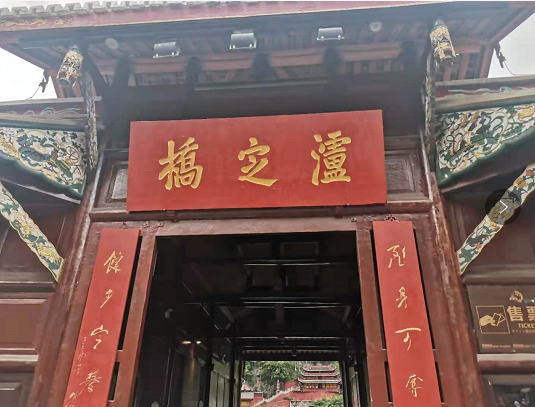
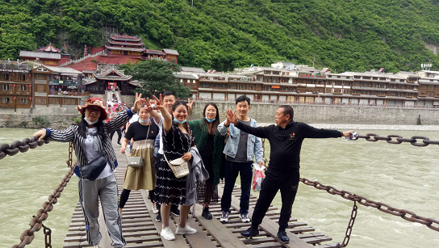
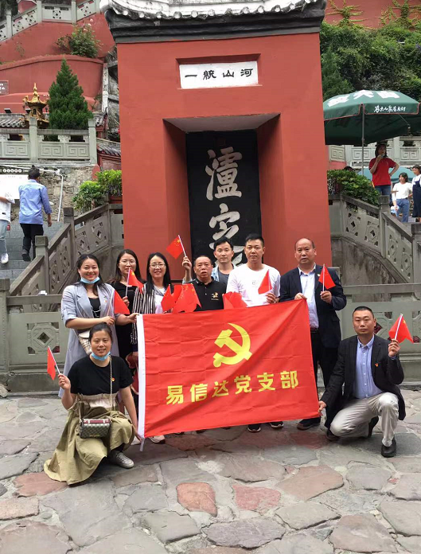

发布时间：2021/06/19 浏览次数：2275
为庆祝中国共产党成立100周年，回顾党的历史，讴歌党的丰功伟绩，教育引导党员同志守初心、担使命，提高党员同志的号召力、战斗力和凝聚力，根据上级文件精神要求，易信达党支部于2021年6月19日组织全体党员同志开展“红心向党、砥砺前行”党组织活动，追忆红军长征峥嵘岁月，缅怀革命先烈，传承红色基因，以饱满的热情迎接中国共产党成立100周年
2021年6月19日，全体易信达党员同志统一从公司出发，前往红色革命教育基地、党史纪念馆“泸定桥”参观学习，接受政治洗礼。14时许，全体党员干部胸带鲜红党徽，重走泸定桥，感受红军英雄飞夺泸定桥的伟大壮举和英雄业绩。当同志们来到泸定桥时，看见大渡河水流湍急，两岸都是高山峻岭，心中不免为之震撼。当人走在桥上通过时，桥面狭窄，摇摇晃晃、随时都有可能掉下去的感觉，用心惊胆战来形容一点也不过分。这段中国革命史上和世界军事史上“惊、险、奇、绝”的战争奇迹，以及老一辈先烈不畏牺牲、勇于奉献的精神深深地感染了在场的每一位党员干部。 党支部书记彭国宾同志要求全体党员干部，要不忘初心，牢记党的宗旨，牢记自己是一名共产党员，要进一步坚定理想信念，努力做好本质工作，以最饱满的热情、最佳的工作状态投入到工作中来。 通过本次参观学习活动，使我们重温了百年党史经历了艰辛的伟大历程，红色政权来之不易，新中国来之不易。让每一位党员干部都深受教育，再一次深刻领悟了伟大的长征精神。党员干部纷纷表示，将以革命先烈为榜样，牢固树立“四个意识”，坚决做到“两个维护”，走好新时代的长征路，爱岗敬业做贡献， 为公司实现全年目标任务不懈努力。
